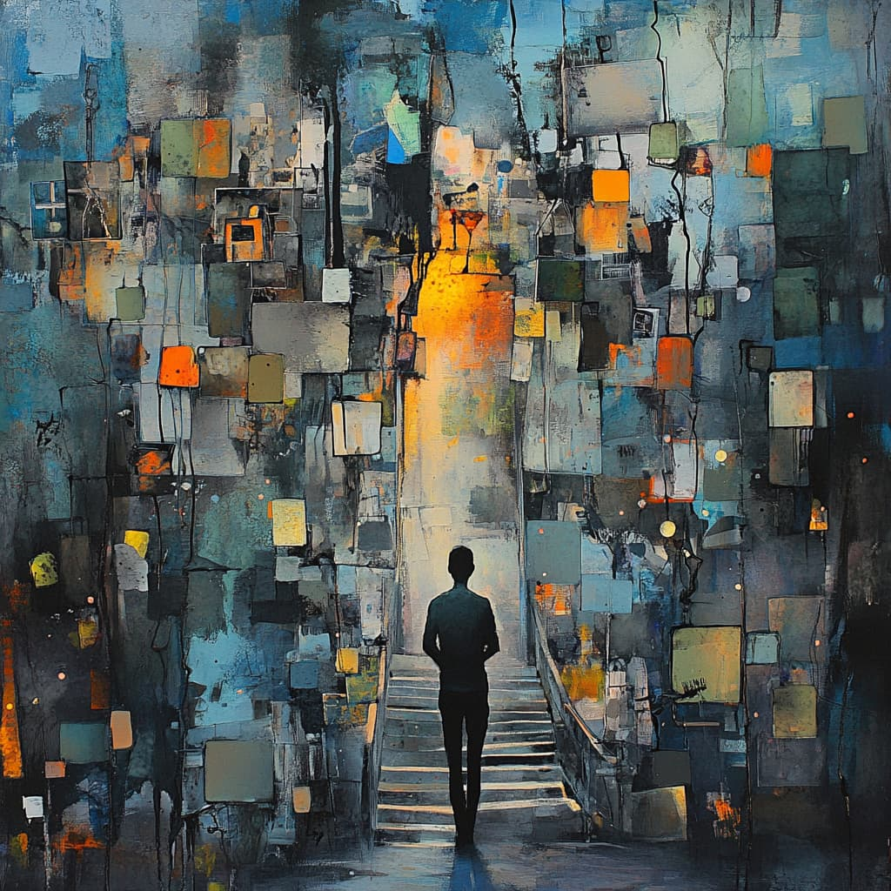
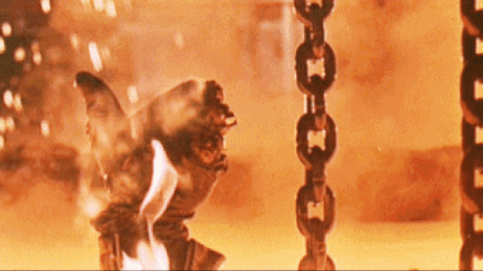
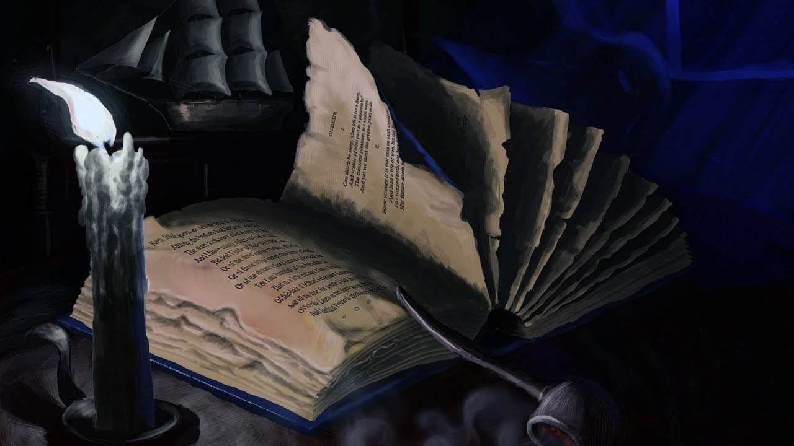
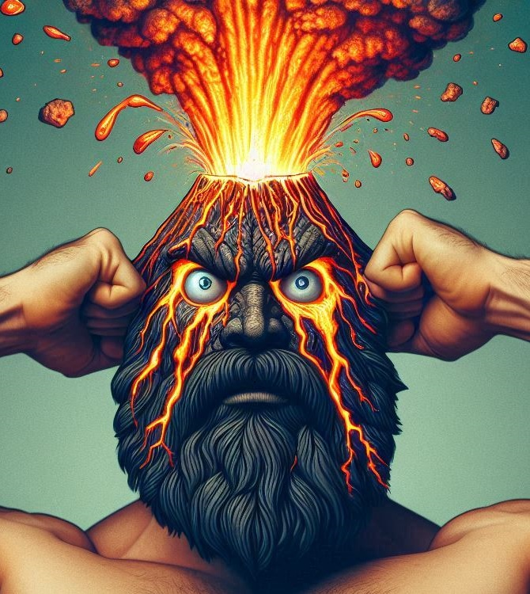
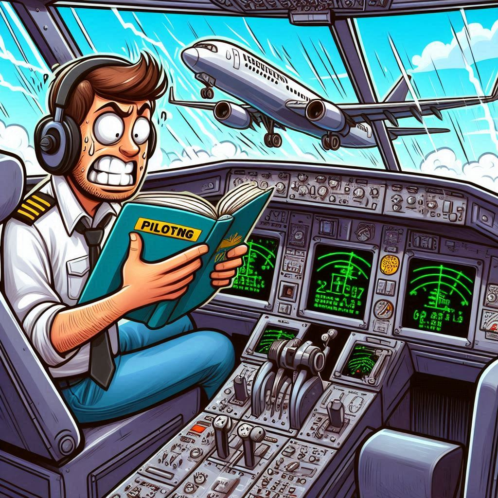
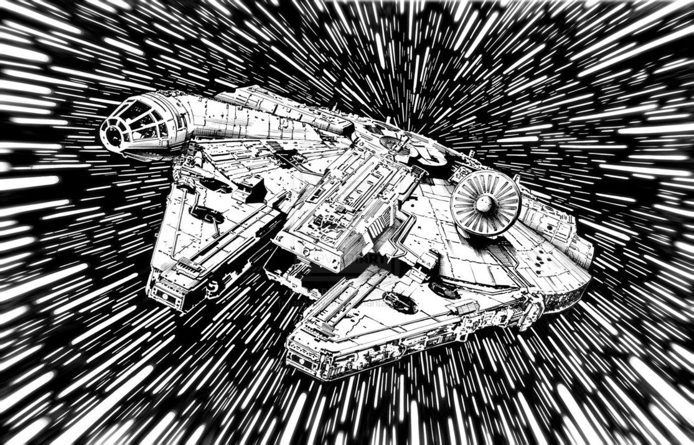

Это было самое начало пути. На этом этапе важно было проникнуться основами и настроиться на учёбу. И, возможно, подумать, как новые знания могут повлиять на ваше будущее.
Высокий эмоциональный подъем. Не понятно куда, но двигаюсь очень уверенно.
1 спринт: Я — чистый лист

<Одни вопросы>
На первых этапах мы работали со страхами и сомнениями, которые часто испытывают новички. Один из них — страх перед чистым листом. Это, конечно же, намного сложнее, чем боязнь куска бумаги. Часто за этим ощущением скрываются более глубокие вопросы: с чего начать? а вдруг будет слишком сложно? что, если я не справлюсь?
Внезапно так много нового, не знаешь за что браться. Что важно, что не-очень. Множество решений о выброре решения.
1 спринт: А если не получится?

<ВСЁ СУПЕР>
Первый проект — позади! Но это всё ещё самое начало пути. Радость могла быстро померкнуть и смениться ожиданием провала. Или вы, наоборот, могли вдохновиться успехами и поверить в себя.
Первый проект так меня увлек, сделал его за один день. Хоть ошибок и было больше чем в последующих, больше всего эмоций было именно на первом.
2 спринт: Погоня за идеалом

<Сколько еще впереди...>
На этом этапе вы уже достаточно разбирались в основах вёрстки, чтобы понять, как много ещё впереди. Вы могли попытаться погнаться за идеалом и понять, что он недостижим. А, может, вы вовсе и не подвержены перфекционизму и вместо того, чтобы сделать идеально, старались просто сделать.
Второй спринт пролетел незаментно. Возможно отсутствие особенностей и стало его особенностью.
2 спринт: О тех, кто рядом
<Всё получится>
Всё это время вы были не одиноки (хотя, возможно, иногда и чувствовали, что одни против целого мира). Вас окружали одногруппники, команда сопровождения и просто близкие люди, которым можно пожаловаться, если очередной макет просто так не поддавался. Осваивать что-то новое легче, когда рядом есть единомышленники, не правда ли?
Помощь действительно необходима. Даже элементарное - молодец, так держать! И вот ты уже полон сил и летишь вперед!
3 спринт: Обходные стратегии

<Создано на DALL·E 3>
На этом курсе вы постоянно решали разные задачи. В какой-то момент вам могло показаться, что решения просто иссякли. Значит, пришло время посмотреть на задачу под другим углом.
Было сложно принять тот факт, что на каждую задачу может быть множество решений и подходов, и среди них не единственно верного. Сложно делать выбор, особенно когда ты не ощущаешь себя достаточно подкованным в вопросе.
3 спринт: Когда опускаются руки

<Don't panic>
Во время учёбы часто возникает чувство, когда не знаешь, за что хвататься. Вроде и проектную пора сдавать, и задачи хочется порешать, и в теории получше разобраться, и жизнь не забыть пожить. В такие моменты очень нужна концентрация. Вспомните, откуда вы её черпали.
Тут я понял что финальные проекты в конце спринтов, гораздно приятней делать, нежели читать теорию и мучать тренажер.
«Сейчас я здесь»

<Go to the future>
Сейчас вы уже очень много знаете о вёрстке. Но это только начало. Во-первых, впереди ещё много материала про «красотищу». Во-вторых, с окончанием курса учёба не заканчивается. Вёрстка — это целый мир. И этот мир постоянно меняется. Познать его полностью не получится, но это тот случай, когда важен сам процесс познания. Ведь часто путь — и есть результат.
Четвертый спринт начался тяжело, было много прокрастинации. Отстал от графика. Но в конце концов собрался, узнал и научился многому, начал освоение нейросетей, кстати часть картинок нарисованы нейросетью.
 <ВПЕРЕД!>
<ВПЕРЕД!>